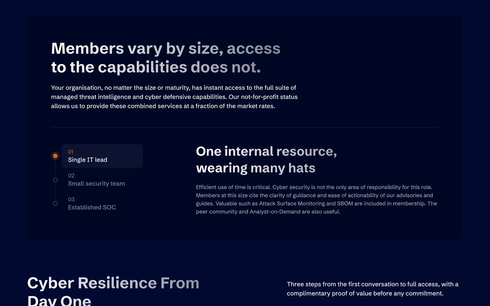
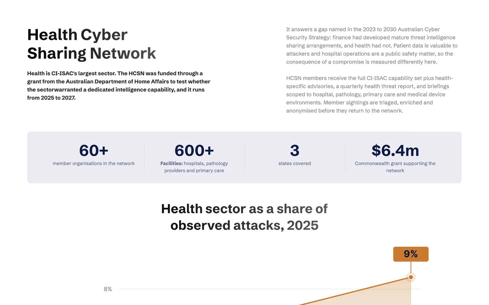
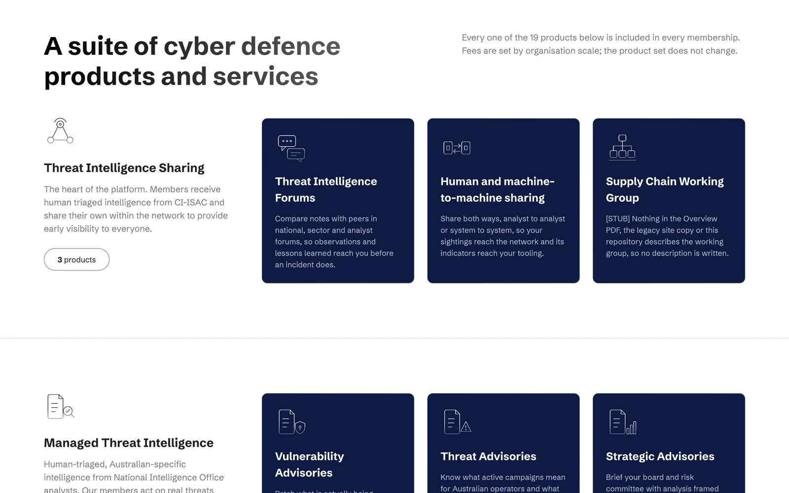
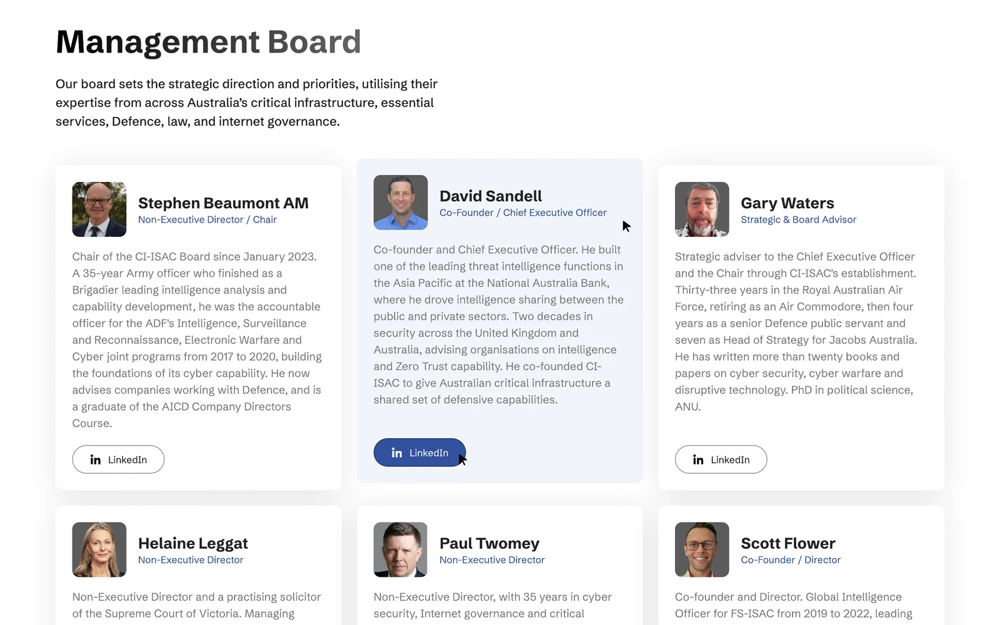
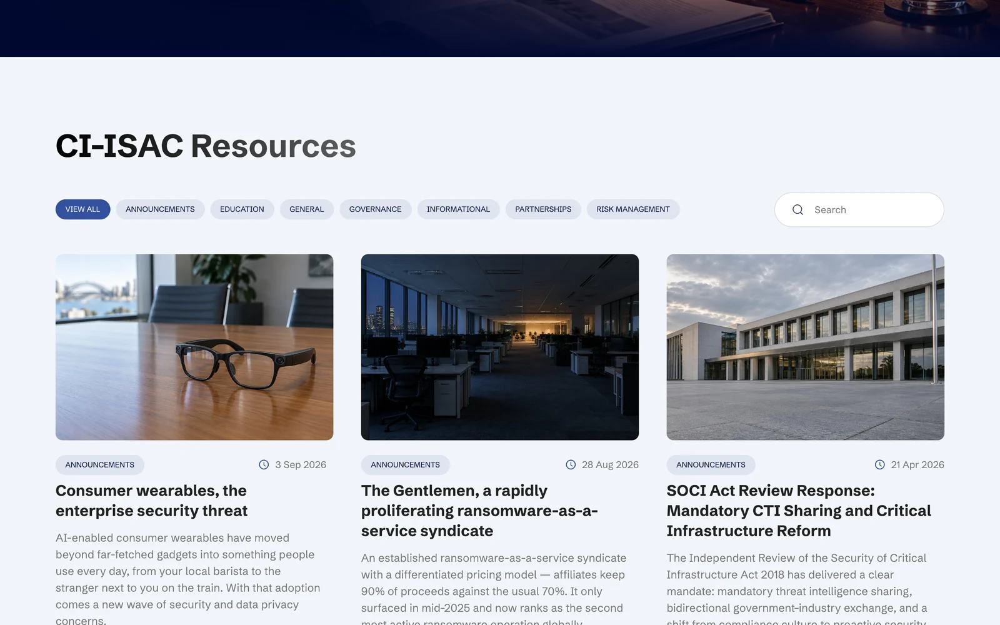
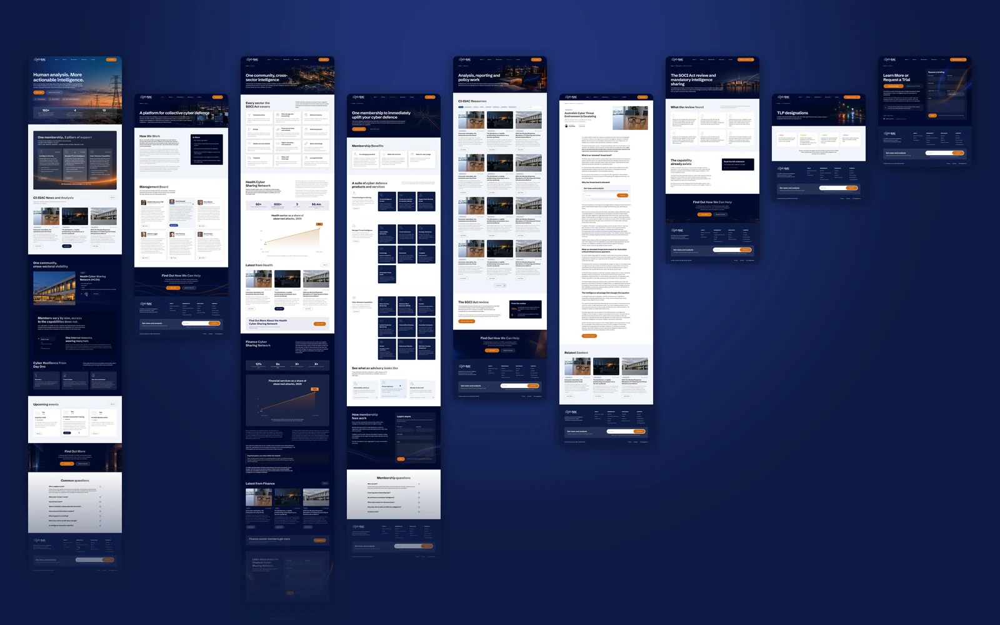
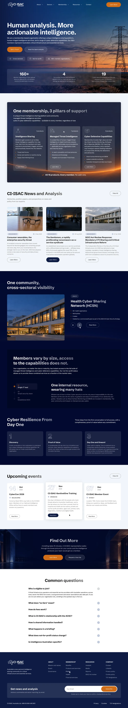

19 products, no structure
Advisories, monitoring, honeypots, feeds and forums were described in different places with no order a buyer could follow.
Cyber security · Not-for-profit · Australia
CI-ISAC Australia is the not-for-profit intelligence sharing community for Australia's critical infrastructure and essential services, with 160+ member organisations from national telcos to regional GPs. We redesigned their WordPress site as a lighter, product-led website: nine page designs in Figma that turn a complex membership into one clear offer, with the Webflow build now under way.

The challenge
CI-ISAC works much like a SaaS platform: members get an intelligence sharing network, human-triaged advisories and a suite of defensive tools. The old WordPress site presented it like an association, with long pages and no clear picture of what a member actually gets.
The team wanted a lighter, cleaner site in the style of modern SaaS products, streamlined to around ten pages, with a CMS for analysis and news. The people reading it are busy: a single IT lead at a regional clinic, a security team at a utility, a SOC at a national telco.
Advisories, monitoring, honeypots, feeds and forums were described in different places with no order a buyer could follow.
A one-person IT team and an established SOC need different reasons to join, but get exactly the same membership.
Advisories, position papers and the SOCI Act response are the best proof of expertise, and they were hard to find.
How we work
The client's own wireframes were the starting point, with nothing treated as fixed. The homepage set the style, revisions came in as comments right on the Figma frames, and the other pages followed in the same system.
Structure
We took the team's wireframes and site map, cut the old site down to about ten pages and planned a CMS for analysis and news.
Homepage
Deep navy, a signal orange for actions and night photos of real Australian infrastructure instead of hooded-hacker stock art.
All pages
About, Sectors, Membership, Resources, an article template, the SOCI Act review, TLP designations and Contact, plus a custom icon set.
Build
A native Webflow build with CMS collections for resources and events, and the existing posts moved over from WordPress.
At a glance
The idea
Nineteen products are too many to list one by one. So the site groups them into three pillars with a count on each: intelligence sharing, managed threat intelligence and cyber defensive capabilities. 3 + 7 + 9, every member, no add-ons. The same structure runs from the homepage to the membership page.
Try it. Switch between the pillars.
The heart of the platform. Members receive human-triaged intelligence and share their own, so everyone gets early visibility.
Human-triaged, Australian-specific intelligence from analysts. Members act on real threats instead of disproving fakes.
Services that lift a member's defences from day one, all included in membership.
All 19 products. Every member. No add-ons.
Homepage
Right after the hero and the key numbers, three dark cards show the pillars with their product counts and the top products in each. One line under them closes the argument: all 19 products, every member, no add-ons.

Member size
The team asked for a block that speaks to each kind of member. A small switcher picks single IT lead, small security team or established SOC, and shows what members of that size value most, from clear advisories to Attack Surface Monitoring.

Sectors
Twelve sectors in a clean grid, each with a line on its threat picture, from energy and water to space technology and local government. Health gets its own block for the Health Cyber Sharing Network: 60+ organisations, 600+ facilities, a $6.4m Commonwealth grant.

Membership
The membership page lists every product under its pillar as a short, specific card: what it does and why it matters to an Australian operator. Fees are explained in plain words, with a briefing form instead of a price table.

About
The about page explains how the platform works in short, then introduces the management board: former intelligence leads, a Brigadier, an Air Commodore and a former ICANN CEO, each with a short bio.

Resources
A filterable hub for announcements, education, governance and partnerships, plus a reading-friendly article template and dedicated pages for the SOCI Act review and TLP designations.

The whole system
Home, About, Sectors, Membership, Resources, an article, the SOCI Act review, TLP designations and Contact. The same navy, orange and card system across all of them, so the Webflow build can reuse every component.


Key decisions
A long feature list on one page.
Three pillars with product counts, 3 + 7 + 9, and a card for every product.
Bronze, silver and gold packages.
One product set for all, a size switcher, and fees explained in a short conversation.
Hooded hackers, padlocks and green code.
Night photos of real infrastructure, a calm navy palette and a custom icon set.
A blog link in the footer.
Latest analysis on the homepage, a filterable resources hub and dedicated policy pages.
The result
Your project next